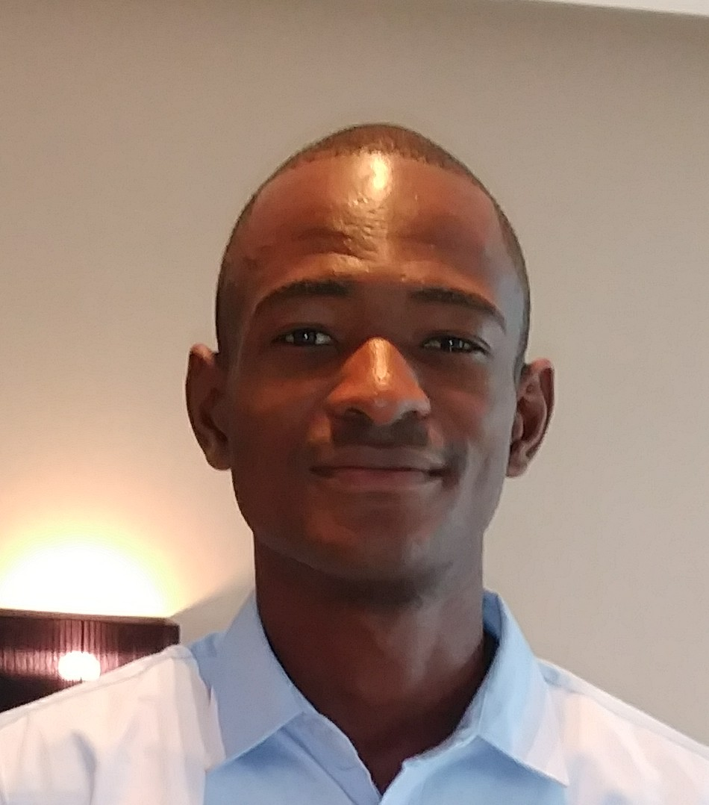

Juste Bouithy | WDD 130
Hi, my name is Juste Bouithy, I am from the Republic Of Congo. I enjoy playing soccer, I aim to obtain a Bachelor's Degree in Applied Technology. I am grateful for BYU Pathway, it has been a great blessing for me both temporally and spiritually. I am a native French speaker, and I love English.